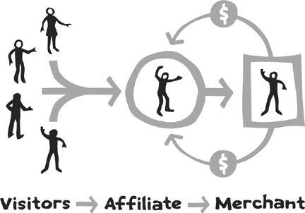

“I’m not a businessman;
I’m a business, man.”
—JAY-Z
As business models go, buying a franchise that is based on someone else’s company is usually a bad idea. The basic buy-our-franchise pitch runs like this: Raise a quarter of a million dollars by withdrawing your life savings, borrowing from family members, and maxing out your credit cards. Pay most of that money up front to a company that will generously allow you to work for it. Operate the business precisely the way they tell you, with no exceptions allowed. Every decision, from whom you hire to what services you offer to where you locate your store, is made by the company. They’ll even tell you what color shirt you are required to wear in “your own business.”
If the business succeeds, you’ll make an average of $47,000 a year after scraping by for three years on the same fifty-hour workweeks you could spend at someone else’s company with a lot less stress. In this winning scenario, your ultimate success won’t be that you started a business: You’ll have bought yourself a job.
If the business fails, which happens more often than most franchise companies want to admit, the company will take back the store from you and resell it to someone else. When they do this, they won’t count your failure as a store closure in their statistics. Thus, when you hear statistics that suggest a high percentage of franchise locations remain open, you have no idea who is operating them and who owes $250,000 that they have no way to repay.
How does that proposal sound to you? Probably not so great—which is why buying into someone else’s operation isn’t usually the opportunity it may seem from the outside. Thankfully, there’s an alternative: building a real business of your own, something that you have ownership of and control over. Buying into someone else’s franchise isn’t usually a good idea, but figuring out how to leverage your own efforts is almost always worth careful consideration.
Who says you can’t be in more than one place at one time? In fact, there are several ways to grow a business through the use of leverage. Franchising yourself isn’t just doing more; it’s about taking your skills, activities, and passions to a higher level to create better returns. The difference between franchising yourself and just doing more is that you take the time to be strategic. Let’s look at a couple of examples.
Nathalie Lussier was an up-and-coming software engineer. Originally from Quebec, she had interned in Silicon Valley and now had the chance to take a big job on Wall Street. Her family said it was the job of her dreams … but as Nathalie thought more about it, she realized it was the job of someone else’s dreams. Turning down the offer, she returned to Canada and decided to pursue a different idea.
Nathalie had a personal success story of dramatically improving her health after switching to a raw foods diet. Eating only fruits, vegetables, and nuts sounded crazy at first, but the results spoke for themselves: In the first month, she lost more than ten pounds and suddenly had energy throughout the day. As she talked with her friends, Nathalie was a natural evangelist—not pushy or judgmental, but offering tips and strategies that people could use to make real improvements even if they weren’t ready to jump into a completely raw diet as Nathalie had done.
After relocating to Toronto, the idea was to build a small business helping other people make the adjustment to raw foods. Being a software engineer (and a self-described geek like Brett Kelly in Chapter 4), Nathalie programmed a database, set up an app, and built her own website. The first incarnation was Raw Food Switch, which correctly represented the concept but seemed a bit boring. One day Nathalie noticed that the same letters—and therefore the same website—could be rendered as Raw Foods Witch, leading to a new theme. Dressing in character with a pointed black hat for photo shoots, she rebranded the whole business around herself. Nathalie created programs, one-time products, and individual consultation sessions in the same way we’ve seen others do throughout the book. Raw Foods Witch grew into a $60,000 business after the first year.
What’s not to love? Just one thing: “From the outside,” she told me at a vegetarian restaurant in Toronto, “it looked like all I talked about was raw foods. No one realized I had done all the programming and really enjoyed the intersection of business and technology.”
The second business came about unexpectedly after Nathalie began getting tech inquiries from her raw foods clients who were also creating businesses. She decided to create a separate brand for tech consulting, operating under her own name instead of the moniker she used in the other business. Raw Foods Witch is still a powerful brand—friends and clients report that other shoppers have mentioned her in the grocery store when they see a cart full of avocados—but she restructured the business to run on 80 percent autopilot. It still brings in a good income, but now Nathalie spends her time building the second business. Instead of doing one or the other, Nathalie effectively franchised herself.
After Nathalie set up the tech consultancy, she had to go back to the raw foods business and make some changes. The business had always been dependent on new products and launches, and since her focus was now elsewhere, she had to reduce that dependency while ensuring that it would produce income on a more regular basis.
Across the border and a few states away, Brooke Thomas founded New Haven Rolfing, a holistic health practice. The clinic attracts a clearly defined group of clients: people who want to address chronic pain and mobility problems. (No one comes to see Brooke when they’re feeling great.) By the time they arrive at New Haven Rolfing, many have gone through a long list of other treatments that haven’t helped. Brooke is a testimony to the treatment she provides—she became pain-free through Rolfing after twenty-three years, having lived her whole life to that point with problems related to a birth injury.
Before she moved to Connecticut, Brooke operated similar businesses in California and New York. With each move she learned a little more about what to do and what to avoid. Opening the same kind of business in different cities was insightful. After moving to New Haven, she had filled her client list within four weeks, and then she took on a partner to manage additional appointments. A single mother with a young child, Brooke works part-time but still earns more than $70,000 a year from the practice.
Repeated success in different cities involved getting to know other care providers, and Brooke noticed that some were more business-savvy than others. By using her real-world experience, Brooke created Practice Abundance, a training program for other wellness providers. Offering a series of support modules and a community forum, Practice Abundance was a business course that focused strictly on ways to improve a practice. Other resources took a very traditional approach. In Brooke’s words, “they assume that everyone wants to get an MBA, when the reality is that most of them just want to run their practice better.” Brooke had diversified to two groups of people: those she served through individual care, and her fellow caregivers who could benefit from non-MBA business advice.
Both Nathalie and Brooke found a way to reach two different audiences: a core group and a related group. As a business grows and the business owner begins itching for new projects, he or she essentially has two options for self-made franchising:
Option 1: Reach more people with the same message.
Option 2: Reach different people with a new message.
Either option is valid, and both can be rewarding. For the first option, it may be helpful to think of the “hub-and-spoke” model when building a brand, especially online. In this model, the hub is your main website: often an e-commerce site where something is sold, but it could also be a blog, a community forum, or something else. The hub is a home base with all the content curated by you or your team and ultimately where you hope to drive new visitors, prospects, and customers.
The spokes, also known as outposts, are all the other places where you spend your time.* These places could include social networking sites, the comments section of your blog or other blogs, actual meetings or networking events, or something else. You can see how this works in the image below:
The goal for each of the outposts is to support the work of the home base, not usually the outpost itself. It can be a trap to spend too much time with any of the outposts, because things change, some outposts become less popular over time. You also own the content and work you create in the home base, whereas most of what happens in an outpost is “owned” by another company.
As a full-time freelance photographer based in Accra, Ghana, Nyani Quarmyne is no stranger to adventure. In West Africa, there are few laws that are widely followed, especially when it comes to copyright and intellectual property. Most of the time, everything works out—but not always. Here’s how Nyani tells the story:
When I was just starting out, I shot a couple of small jobs for a Ghanaian creative agency. Shortly thereafter I got a call from them asking if I could do an urgent shoot for a new client, necessitating travel to a couple of countries in the region. The deadline was really tight; it was a get-the-call-today-and-leave-in-the-morning kind of thing, and even the details of exactly where we would be going remained in flux until the last minute. Having shot for the agency before, they had seen and signed my contracts previously, and I made the mistake of thinking they understood how I work and the basis on which I was undertaking this job. So in the rush I omitted to get the paperwork squared away, and off we went.
The shoot went really well, and I produced what I consider to be some very strong work. All was well until we were on a rural road far from any city or airport. While we were driving along, the client demanded copyright of the images—not part of the deal as far as I was concerned—and threatened to have me detained at a remote border in a politically unstable nation unless I handed them over. Not wanting to sample the hospitality of the local gendarmes, I conceded and lost some of the strongest images I had shot to date. I learned my lesson, though: Next time, be sure to get the paperwork done first.
One path to franchising yourself is to team up with a trusted partner. This doesn’t mean you completely merge your business with that person; in fact, the easiest and most common way to partner with someone is to create a joint venture. In this arrangement, two or more people join forces to collaborate on a single new project. (Karol and Adam’s “fire sale” project, described in Chapter 8, is a joint venture.)
In other arrangements, an all-new business is created that is jointly owned by the partners. That’s what Patrick McCrann and Rich Strauss did. They were both high-end performance coaches for athletes and decided to team up to create Endurance Nation, a training program and community for triathletes. They divide responsibilities on the basis of what they’re each good at. Patrick calls all the new members on the phone to welcome them, and Rich crafts an online training plan for them.†
However it’s structured, the goal of a partnership is to grow beyond what each person can create on his or her own. Ralf Hildebrandt operates an international professional services firm based in Stuttgart, Germany. Here’s how he explains why 1 + 1 can equal 3: “My rule of thumb is that a successful partnership (or any type of collaboration) should create a combined business which is at least 33 percent larger than the sum of what the two individuals could achieve on their own.
“People are often inclined to think that distributing work to a few others is what partnership is about,” Ralf continued. “But that is just subcontracting. True partnership must create more than just a divided list of tasks.”
Courtesy of Pamela Slim, a coach, author, and expert on partnerships, here’s an abbreviated list of decisions you should make at the beginning of any joint venture:
• How will the money be divided? (Common splits include an even 50-50, 60-40 with the higher share going to the partner who does more work, and 45-45 with 10 percent reserved for administrative costs.)
• What are the responsibilities of each partner?
• What kind of information is shared between partners?
• How will the project be jointly marketed?
• How long will our agreement be in place?
• How often will we touch base to discuss the partnership?
Check out the One-Page Partnership Agreement for a simple way to spell out basic agreements between two parties.
One-Page Partnership Agreement
Keep it simple. Remember that the relationship is the most important part; choosing to keep it strong and trusting is more important than having the right clauses and legal language. Many of our subjects report doing business for large amounts of money on a long-term basis without any contracts at all. Here’s a starting point. You should consult a qualified third party if you’d like to define your obligations more clearly or if you’re concerned about something.
Partners: [Partner 1] and [Partner 2]. These partners agree to collaborate in good faith on a mutually beneficial project known as [project name].
Overview: [summary of project, including outcomes and expected results]
Revenue Sharing: Net income for the project will be split on the basis of [percentage] percent to [Partner 1] and [percentage] percent to [Partner 2]. All minor costs associated with the project will be deducted prior to calculating net income. If any particular cost exceeds [amount], both partners must approve the decision.
Life of Revenue-Sharing Agreement: The revenue-sharing agreement will last for [period of time], at the end of which the partners will decide if it should be continued, discontinued, or revised.
Publication and Sale: The project will be offered for sale on [websites and any other sources].
Customer Support: [Partner 1] will be responsible for [duties]. [Partner 2] will be responsible for [duties]. Project feedback from customers will be shared between both parties.
Marketing: Both parties will actively market the project to ensure its success. This will include promotion on [websites], through each partner’s online community and offline networks, and each party requesting coverage of the project from other influential websites.
Time Line: The partners agree to complete all aspects of the project to prepare for launch on [date].
Jamila Tazewell followed a common path after graduating from art school: She waited tables in New York City while dreaming of something else. Fortunately, waiting on tables was the only waiting she did—she also took action to start a business. She started by making “outlandish handbags” and unique wallets. “I was convinced I would magically become an accessories star overnight,” she says, initially assuming that a fashion house would see her products and offer to distribute them. “Then I saw I could actually sell my handbags and wallets myself. That’s when I decided to pursue the opportunity further.”
Jamila headed west to Los Angeles to sell her accessories full-time without relying on a waitress job to pay the bills this time. It worked, but only just barely: She did everything herself, and the business struggled to find its feet. She was glad she no longer waited tables, but as with buying someone else’s franchise, Jamila felt like she bought herself a job.
Three years in, Jamila was ready to make a change. She hired a local seamstress to make the product under her supervision, a move she describes as “challenging but necessary.” After that, she brought in someone to do the printing and shipping as well. This was a big step that required “a brutal process of trial and error, but getting the product out of my home office was incredibly liberating. It felt like my child was finally old enough to go off to boarding school or something.”
Interestingly, this perspective is not universally accepted. Several other topics covered in the study resulted in a wave of similar responses. Many members of our group spoke of bootstrapping and limited business plans in the same way, and the connection between freedom and value was a key theme for almost everyone. But there was one topic that resulted in a wave of divergent opinions. That topic was employing contractors or “virtual assistants,” also known as outsourcing. On this topic, input ranged from “love it” to “hate it” to “it’s complicated.”
For every story like Jamila’s that told of partnership leading to freedom, I heard a contrasting story from someone who was much happier deliberately keeping the business to themselves, without outsourcing or hiring. Let’s look at a few examples of the different camps.
The camp in favor of outsourcing can be represented with the following statements from business owners who came to view their release from tasks and responsibility as a freeing decision:
Hiring employees was my biggest challenge as a business owner. I put it off for years and turned away tens of thousands of dollars each year because I was afraid to grow. Finally, I realized that I had hit a ceiling. I couldn’t make any more money without bringing some members to my team. Since changing the structure, I’m able to accept all of the orders I had had to turn away. I’m no longer overbooked, and I can invest extra time in moving the business forward in other aspects. Do I wish I could do it all myself? I used to, because I don’t like to lead or be led. I don’t like to feel like the boss. But I am so much happier now as part of a team. I’m the pilot of my business, and my crew is there to make my work easier while fulfilling their own goals as well. —Megan Hunt (read more about Megan in Chapter 3)
Our aim has always been to have zero employees in order to avoid the expense, complex legal issues, and inflexibility. However, our warehousing operation is completely contracted out—all stock receipts, storage, processing, pick, pack, and dispatch is taken care of by our logistics partners; we just send the orders. We use freelance sales agents, who are paid on commission only. We use virtual assistants for telephone answering when we are unavailable. —Jonathan Pincas (read more about Jonathan in Chapter 14)
We contracted with an outside printer to make our first run of maps, and it was the best decision we have ever made. Our business would literally not exist if we had tried to print the maps on our own. As demand has increased, our printers have been able to provide us with additional inventory. We never would have been able to print large quantities of posters while maintaining our full-time jobs and tending to a growing business. We are also happy that our business can support the work of other artisans. —Jen Adrion and Omar Noory (read more about Jen and Omar in Chapter 6)
These quotes are representative of others who have all said similar things: Outsourcing increases freedom and allows a business to scale without the owners doing everything themselves.
CASE 2: ANTI-OUTSOURCING
The camp opposed to outsourcing can be represented with the following statements from business owners who believed that expansion would be difficult, undesirable, or otherwise limiting of the freedom they had achieved through the business:
I’m at the point where I need to find a way to grow my ability to respond to customer demand, but I struggle with concerns over reputation to the extent that I turn over bookings to employees or contractors. I’ve been offered partnerships, but I turn them down because either I have concerns over the quality of the partner or because the partner wants a referral commission. I could easily raise my price and provide the commission, but I know I wouldn’t be happy working for less. And thus I haven’t grown further, though I’m comfortable with that for now. —Gary Leff (read more about Gary in Chapter 3)
I actually prefer not to work with contractors, employees, or assistants. My business succeeds on the fact that it is intentionally small. I can fit my whole business into a backpack and take it wherever I go—no office, no stationery, no administrative staff. Keeping my overhead to zero has lowered the risks and kept profits high. —Adam Westbrook (Adam operates a design services business from the United Kingdom)
I’m big on keeping the company lean and mean. I’m the only employee, and I work out of my home. We used to own a retail business where paying rent, insurance, and twelve employees came ahead of our own paychecks. Those days are over. Simply put, I don’t like getting paid last. —Jaden Hair (read more about Jaden in Chapter 2)
My experiences with outsourcing work to remote contractors left me spending nearly as much time managing the work as it would to actually do it myself. I’ve yet to find a nice balance of being able to hire someone to work on a project and making a reasonable profit without spending too much time on it myself. —Andy Dunn (read more about Andy in Chapter 11)
My motto: Never have a boss and never be a boss. Since age twenty-two, this has been my situation. I have an accountant, because number crunching is my biggest weakness. Otherwise, I am a company of one. I can always vouch for my own work, and my integrity means the world to me. —Brandy Agerbeck (read more about Brandy in Chapter 7)
As with the pro-outsourcing camp, these quotes are representative of many others. Lee Williams-Demming mentioned that her importing business formerly had five employees and hundreds of overseas suppliers. It now has only one employee and a smaller supplier network. “Trust me,” she wrote in an email, “we’re better off in every way with a much smaller team.”
Although I know it’s not the best fit for everyone, I tend to fall into the anti-outsourcing camp in my own business. Instead of sending out projects to everywhere, I’ve chosen to keep a very small team and do only limited contracting with outsiders. The first argument for outsourcing is that it allows you as a business owner to “do more of what you love” while assigning unwanted tasks to someone else. But outsourcing can create greater problems, and you can construct your business in a way in which few of these tasks are actually needed in the first place.
More than once, I’ve heard from colleagues who say they have a fantastic virtual assistant they’d be happy to recommend to me. Then, weeks or months later, I hear they’re looking for a new one. “What happened to so-and-so?” I ask. “Well, they were great … at first. But then the process broke down, balls were dropped, and we had to part ways.”
This is a recurring story, told many ways but with the same end result. There are certainly exceptions, but many capable people who work as virtual assistants often end up deciding they’d rather be running their own show. If you have to spend your time correcting problems caused by the team created to support you, the team hasn’t really improved your life. Meanwhile, it’s clear that others have definitely benefited from harnessing the “get other people to do your stuff” wave.
With such divergent opinions, how do you know which path to follow? Thankfully, it’s not that complicated. The answer to the question of whether outsourcing is a good fit depends on two things: (1) the specific business and (2) the personality of the business owner.
Many of the problems people experience with outsourcing (on both sides) can be avoided by having a clear understanding of the responsibilities that a contractor or assistant will have. In a business that relies on a series of relatively mindless, repetitive tasks, for example, outsourcing may be a good option. A business that relies on customer relationships, however, may not be a good fit.
Your own personality also matters, because if you’re building a freedom business, you want to find the best possible solution to match your vision of freedom. For some people, that involves traveling the world on a low-overhead operation, with the money from the business primarily going to support the owner. Other people want to stay in one place and build a team, creating a business that will outlast themselves. In the end, the best answer to the outsourcing question is the same as many others: Do what makes sense for you, not for someone else.
Before we move on, let’s look at a couple of other forms of getting help. “My entire business is a product of extremely beneficial trades,” says Brooke Snow, who traded music lessons for photography lessons before going on to teach photography herself. She also traded for website design, video footage, and tech support. “These trades have saved me tens of thousands of dollars and have not only transformed my business but are in many ways some of the very reasons I have a business. It has allowed me to operate completely debt free with low financial investment, low overhead, and a high rate of return.”
Several respondents mentioned that other tasks were “outsourced” to family members. After every $1,000 milestone in Eleanor Mayrhofer’s stationery business, she makes a special dinner for her husband, who helps out with bookkeeping and programming. Nathalie Lussier mentioned that hiring a housecleaner made a big difference in her productivity. “Although that might seem trivial,” she wrote, “it was actually key to realizing how important it is not to try to do it all myself all the time.” Jonathan Pincas wrote in with a last-minute correction to his earlier comments on outsourcing: He wanted to note that his mother gets the mail twice a week in England and then scans it to forward it electronically.
The Business Audit
However it is structured, a good business needs nurturing and continuous improvement. As your project grows, take some time to look at each aspect of it, especially any public communication that customers review while making a purchasing decision. Answer these questions and think about how you can improve. The goal is to (1) fix little problems and (2) identify small actions you can take that will create significant results over time.
“WHERE DO YOU MAKE MONEY?”
Once a business gets up and running, it’s very easy to get trapped in all kinds of things that have nothing to do with making money. The solution is simple: Focus on the money. In the audit, you’ll want to look at where the money comes from and determine what you can do to keep it coming. Sometimes new opportunities present themselves; sometimes there’s an easy fix you can make to turn on another tap. If you have a range of projects, products, or activities, it’s almost always better to devote your efforts to the strong performers than to try and pull up the weak ones. Most people do the opposite, but if your goal is for everything to be average, that’s the best you’ll ever get.
“HOW GOOD IS YOUR MESSAGING?”
The marketing materials you use, whether online or offline, probably involve some use of words, known as copy. Go back to the beginning and read the copy carefully. Review each page of the sales material slowly and then read it out loud. Does it still present the message that you want? What information should be culled or revised?
“ARE YOUR PRICES WHAT THEY SHOULD BE?”
When was the last time you raised your prices? You can have a sale or give out discount codes from time to time, but like all businesses, you should also plan on raising your prices on a regular basis as well. Always remember that trying to price for “everyone” is a business death trap. Since business owners live or die by the free market system, the way you decide whether your pricing is fair is by asking another question: Are people buying what you sell? If the answer is yes, you’re on the right track. If it is no, you have a problem.
“HOW ARE YOU MARKETING TO EXISTING CUSTOMERS?”
One of the best things you can do is reach out to existing customers and find a way to meet more of their needs. As part of this examination, you should check your postpurchase process carefully. What happens after someone buys? Do things get sent to the right place? Does everything arrive in the buyer’s in-box or physical mailbox as it should? If you sell consulting, do clients know exactly how to set up a time in your schedule after making a payment? The easier you can make all of these things, the better.
“ARE YOU TRACKING, MONITORING, OR TESTING ENOUGH?”
The thing about testing is that you just don’t know what’s going to happen until you do it. That’s why you test! Once I installed an upsell offer in which customers could get a $50 gift certificate for only $25 after making a purchase. I thought it was a killer offer, but my customers didn’t think so; it was accepted only one out of twenty times (5 percent). A good upsell can convert much better than that, so out went the gift certificate offer.
“WHERE ARE THE BIG MISSING OPPORTUNITIES?”
Having a big opportunity doesn’t mean you should pursue it. I pass up a lot of things because they aren’t a good fit for my overall strategy. However, it’s good to know what you’re missing even if you’re missing it deliberately. Keep your “possibilities list” updated so you can follow up when you have more time or if you need more money.
In Murfreesboro, Tennessee, Erica Cosminsky was a human resources professional for a pharmacy chain and a parent to two-year-old Riley. Working long hours during the day, she traded off child care with Riley’s father, with Erica taking the weekend shift while he took the weekdays. When she was unexpectedly laid off, the shock gradually turned to relief—Erica had been thinking about starting a service company but never had the time.
The goal was to operate a small transcription service, typing up the contents of conference calls, interviews, and meetings for other businesses. Erica first had the idea to provide her service in real time, attending live conferences, typing on the fly, and delivering the contents before the end of the day. She was good at the jobs she took under this arrangement, but there were two problems: Live conference work was scarce, and it interfered with her child care needs.
Erica was worried about competing as a basic transcription service, since many other companies already performed that role. Live transcription wasn’t the best differentiator, but Erica found another: adding basic formatting and a nice-looking layout to the transcriptions she delivered. Most competitors refused to do any design whatsoever, making clear that their job was just to transcribe. Many of Erica’s clients were solopreneurs or other very small businesses, and not everyone had access to a graphic designer or layout person who could take over after receiving a transcription. The differentiation worked; within three months of reversing course and putting out the word that she was available, Erica could no longer keep up and was ready to expand the team.
Then she made another key decision: not to hire employees but only hire contractors. By building the team on a contract-only basis, she had more flexibility to increase or downsize the numbers, depending on market needs. This was important because of the way the industry works: From November to May in a recent cycle, she was completely booked up and had to recruit seventeen transcriptionists serving 180 clients, plus a virtual assistant to keep everyone on track. But in the summertime, very few businesses need transcription work, so the team shrinks to four people. (The contractors all understand that the work is cyclical and future projects aren’t guaranteed.)
These days Erica manages the business without doing any actual transcription herself. She has created a flexible structure that allows her to respond to the market without feeling locked in or overloaded by doing it all herself. The business experienced a testing point in the fall of 2009, when Erica’s daughter contracted a bad case of the flu, requiring Erica to spend almost her whole time as a caregiver for three weeks. It was hard to deal with on a personal level, she says, but fortunately, the team was there to back her up and most of the business clients didn’t even realize she was gone. Riley recovered, and Erica went back to work, leaving her delayed on invoices but thankfully not delayed on actual income. The model of team building through contractors worked.
You may be familiar with affiliate programs, in which merchants cooperate with partners to bring in more traffic and sales, rewarding affiliates with a cut of the earnings. Although a few other businesses had experimented with this model earlier, Amazon.com started the first mainstream “associates” partnership back in 1996, inviting its customers to join as revenue-sharing partners.
Since then, almost every major retailer has come up with some kind of affiliate program, as have many small businesses of all kinds. You can start your own affiliate program very easily (a four-step startup guide is available for free at 100startup.com), and this can be an easy way to franchise yourself. Do it right, and hundreds of eager affiliates will line up to promote your work. Do it better, though, and you’ll create a true partnership that will bring you steady income over time no matter what else is happening in your business or the general economy.
It works like this:

There are two big problems with most affiliate programs. First, the merchants tend to pay very small commissions, leaving little for the affiliate who sent them the referral in the first place, and second, the affiliates tend to do no more than blindly pass over referrals. Big problems create big opportunities, so a good merchant can offer a better program by paying much higher commissions to start with but also expecting more from the affiliate.
For years I’ve paid a 51 percent commission to affiliates in my business under the principle that they should earn more than I do for promoting my work. At the same time, I make it clear that they’ll need to do more than just slap up a link somewhere. If they want to be successful, they’ll need to create a closer connection between their readers and my business. They can do that by using the products themselves, writing reviews, and offering some kind of bonus to the referrals they make. If you structure your affiliate program in a similar manner, you’ll attract higher-quality partners.
Partnerships and outsourcing can be a good way to build some businesses, but relying on someone else doesn’t always work out as planned. Let’s look at a (very) small business that did not benefit from a contract arrangement.
Spencer and Hannah Copley, ages twelve and ten, lived with their parents on board a hospital ship deployed to West Africa. Four hundred other adults (some with children) also lived on the ship, which spent six months at a time bringing surgeons and medical teams to countries such as Sierra Leone and Liberia.
Living on a ship in West Africa presented a number of challenges. What might be small concerns at home quickly became real issues on an old ship deployed to a poor country. Particular to our story, everyone was responsible for taking out their own garbage, but it wasn’t always an easy task. A large dumpster was located at the edge of the dock, requiring a long walk under the hot sun. Often the dumpster was full, and everyone had to keep their garbage in their small cabins until dumpster use became available again, sometimes several days later.
An entrepreneur in the making, twelve-year-old Spencer hit on an idea: What if he started a garbage collection service? The price was a steal. For just $1 a week, you could leave your garbage in the hall on Tuesdays and Fridays, and the tag team duo of Spencer and Hannah would be responsible for hauling it out to the dumpster. Spencer made a poster advertising the offer and tacked it to the bulletin board by the snack bar. The offer was an immediate hit: Ten customers signed up right away, and another fifteen in the next few weeks.
Having acquired a strong customer base, Spencer and Hannah made sure to keep their clients regularly informed with important updates. One day the dumpster was completely out of commission, and customers received a notice: “We regret to inform you that Copley Trash Services will not be open this Friday. We will perform an extra pickup on Sunday instead. Have a great day!” Another time, a leaky garbage bag created difficulties for ten-year-old Hannah, so a customer notice went out titled “Important Things to Know about Your Trash.”‡
Spencer and Hannah had created recurring income of $25 a week, a substantial preteen wage that was spent in three ways: Ten percent went out as a tithe to an orphanage they had been visiting on the weekends, and 40 percent was put in reserve as a puppy saving fund for when they returned to their home in Washington State. The remaining 50 percent was used for discretionary purchases, often video games for sale on the local aftermarket and Snickers bars at the snack bar.
The business hit a rough patch when Spencer and Hannah, along with their parents, went home to Washington State on a three-month leave. They didn’t want to lose their customer base while they were away, so they decided to turn the business over to two other children also living on the ship. Unfortunately, the new management was not nearly as diligent about the business as Spencer and Hannah. Service was intermittent: Some days the trash would not be picked up at all, with no notice or explanation. Many customers opted out of their weekly subscription and returned to carrying out their own garbage again. Among the customers who stayed, bill collection and revenue declined due to administrative oversights. Without an active manager like Spencer and without a One-Page Partnership Agreement, the business suffered greatly in the absence of its founders.
Who says you’re just one person? You can hire an army of virtual assistants to do your bidding. You can carefully pursue partnerships with the goal of having 1 + 1 = 3 or more. You can grow the business by reaching more prospects with the same message, or like Nathalie Lussier (the Raw Foods Witch), you can reach out to a whole different crowd while retaining your existing business.
Just don’t open a sandwich shop with someone else’s name on it. A better way is to franchise yourself.
By leveraging skills and contacts, you can be in more than one place at the same time. Strategies to do this include outsourcing, affiliate recruitment, and partnerships.
*I’m grateful to Chris Brogan for the term outposts as well as the general concept of the hub and spoke applied to building a brand. Darren Rowse and Chris Garrett also contributed to this conversation.
†Patrick and Rich use a good cop-bad cop routine in handling their business, which relates well to their differences: Patrick was in the Peace Corps and Rich was in the Marine Corps. Patrick has kids and lives on the East Coast; Rich is childless and lives on the West Coast.
‡I was a customer of Copley Trash Services, and one week I neglected to pay my dues. A polite note was placed on my door: “Did you forget something?” I shamefully paid up and included an extra 50 cents in late fees.